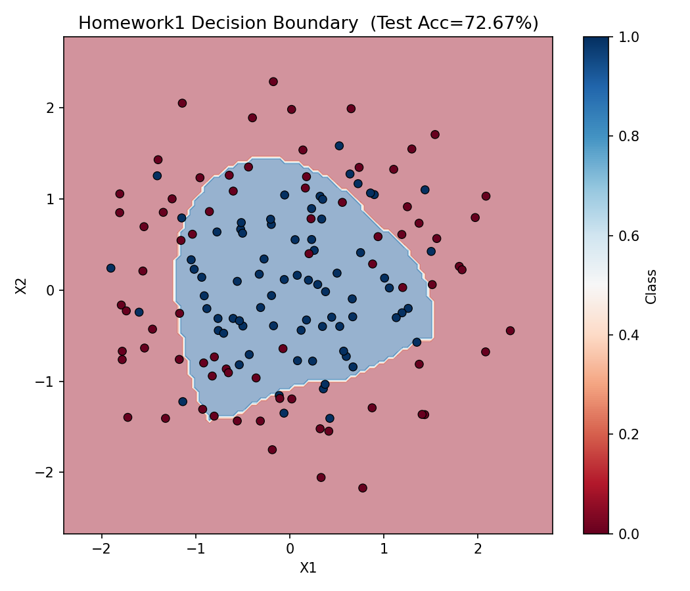
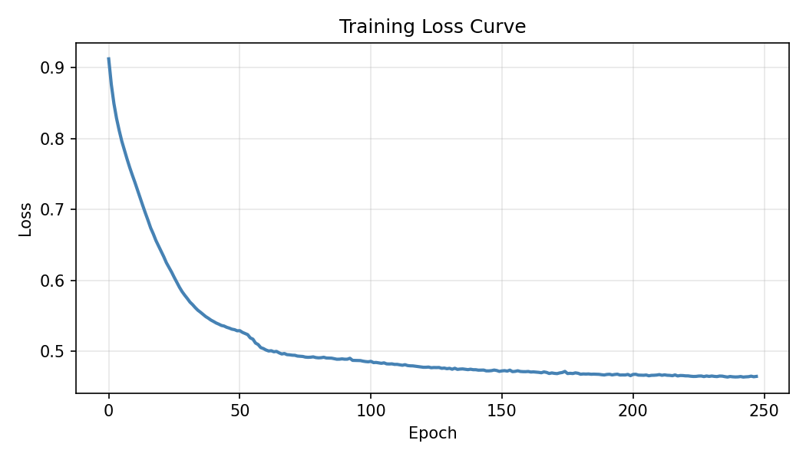
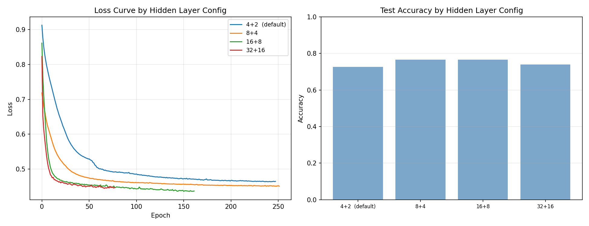

DEEP LEARNING · 142216015
三份作業涵蓋 MLP 決策邊界可視化、AlexNet 超參數調整、FC 架構與 Dropout 正則化分析， 資料集橫跨 sklearn make_circles 與 CIFAR-10。
01 / HOMEWORK
模擬 Google Neural Network Playground，對環形資料集進行二元分類。 手動加入 X₁², X₂², X₁·X₂, sin(X₁), sin(X₂) 五個非線性特徵， 並比較四種隱藏層配置的收斂速度與最終準確率。
| 隱藏層配置 | Train Acc | Test Acc | 備註 |
|---|---|---|---|
| 4+2（預設） | 75.4% | 72.7% | 容量不足，收斂慢 |
| 8+4 | 78.3% | 77.3% | — |
| 16+8 | 79.1% | 77.3% | 最低 loss |
| 32+16 | 78.0% | 70.7% | 過大，略有過擬合 |

DECISION BOUNDARY · TEST ACC=72.67%
TRAINING LOSS CURVE
HIDDEN LAYER COMPARISON02 / HOMEWORK
基於 CIFAR-10（32×32 RGB，10 類）設計簡化版 AlexNet， 採用 one-at-a-time 策略逐一調整四項超參數， 觀察每項變動對 train loss 與 test accuracy 的獨立影響。
03 / HOMEWORK
固定 Conv 特徵提取器（3 層 Conv → AdaptiveAvgPool → 6400 維）， 分別比較 Small / Medium / Large 三種 FC 架構， 以及 dropout ∈ {0.0, 0.3, 0.5} 對 train/test accuracy gap 的影響。 Train − Test > 0.1 自動標記為過擬合警示。
| 配置 | Dropout | Train Acc | Test Acc | Gap |
|---|---|---|---|---|
| Small | 0.0 | — | — | ⚠ 過擬合風險 |
| Small | 0.3 | — | — | 穩定 |
| Small | 0.5 | — | — | 最小 gap |
ENV / STACK